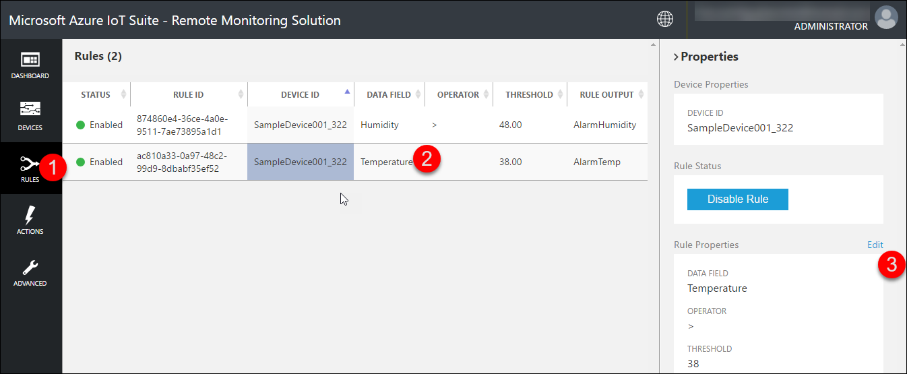
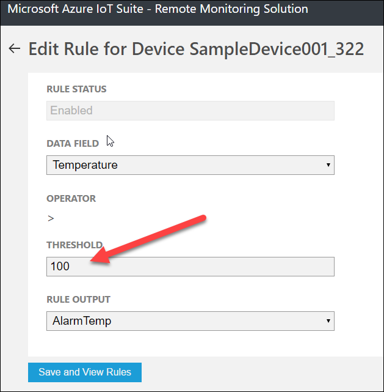
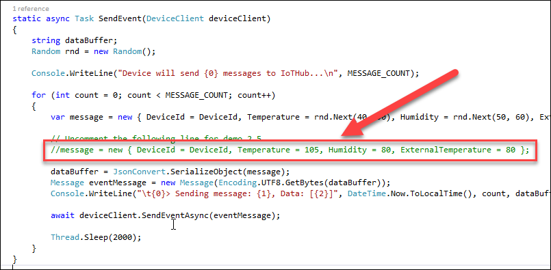
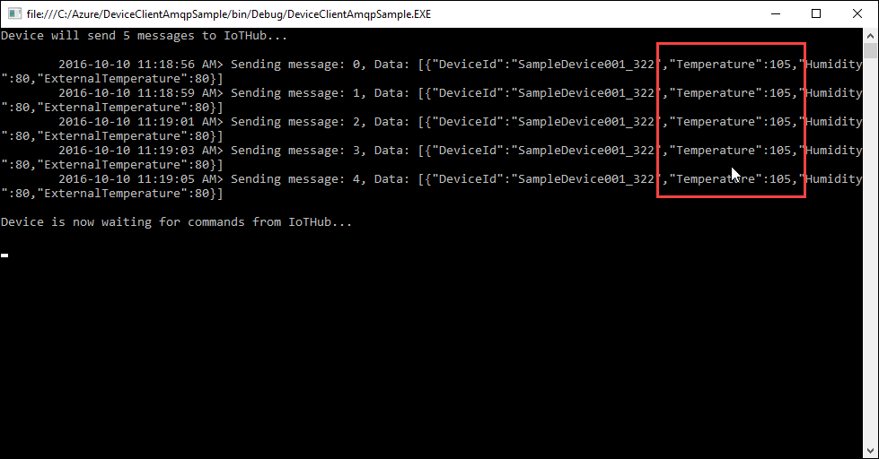
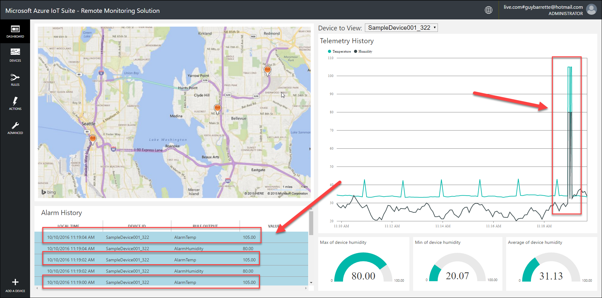
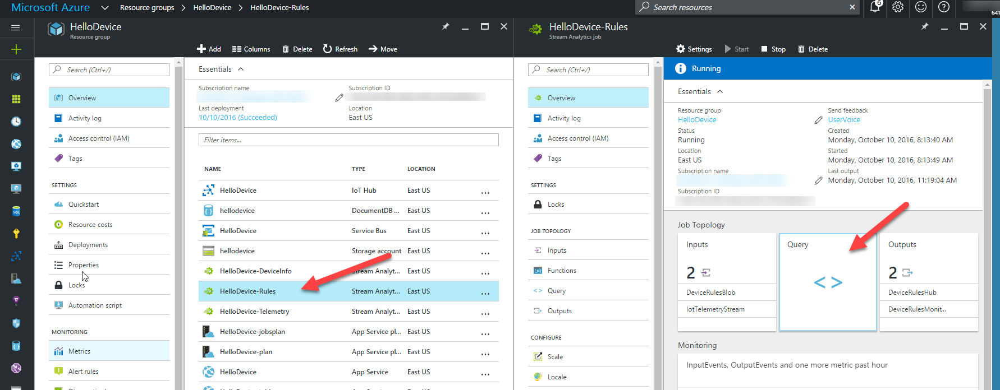
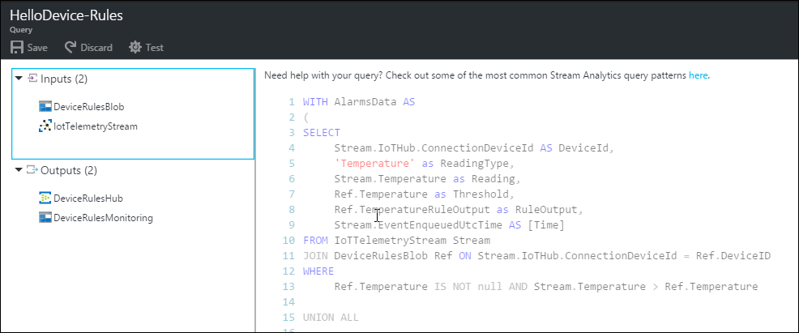

Show how you can set a rule which will fire an alert in the solution when data from a device meets a specific criterion.
An active Azure subscription. If you don’t have an account, you can create a free trial account in just a couple of minutes. For details, see http://azure.microsoft.com/pricing/free-trial/
The free Visual Studio 2015 Community Edition is required to run a C# solution that will send messages. If you don’t have Visual Studio or if you’re not running Windows, don’t despair as you can show the code in any text editor, you just won’t be able to run it.
You need the Remote Monitoring solution still running that you set up for Demo 2.1 and the solution from Demo 2.3.
In this demo, you’ll explain how the rules in the Remote Monitoring solution work. You will add a new rule, change the device C# code to make sure you’ll get messages that will trigger the rule and finally, look at the Stream Analytics query.
Head to the Remote Monitoring Website, click on the Rules button in the left-side menu.
If you selected the device 001, you’ll have rules already created for you. Select the one for the temperature value and click on the Edit link. If you selected another device, simply select it from the Devices list and add a new temperature rule.

Simple change the threshold value to 100.

Head back to Visual Studio and uncomment the following line of code. It will simply send a temperature value of 105, enough to trigger the rule.

Press F5 to launch the application.

Head back to the Web site and show that the messages were sent with the new value and that alarms were set.

Head to the Azure portal. Select the Stream Analytics job that process the rules and click on the Query tile.

Show the query.

Explain that the query
Gets the rules from the DeviceRulesBlob input
Gets the telemetry from the IoT Hub
Uses both inputs in a Select query
Gets the device records where temperature is greater than the rule temperature
Sends the result as a message in Event Hub and in Blob storage.
This completes demo this demo.
You’ll can now go back to the azureiotsuite.com portal to delete your instance of the Remote Monitoring solution.